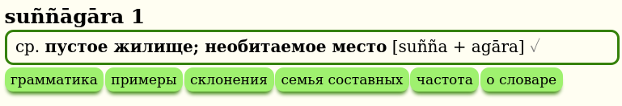
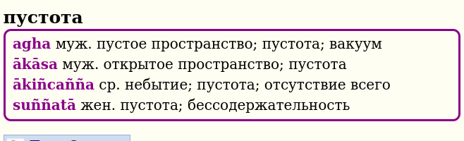
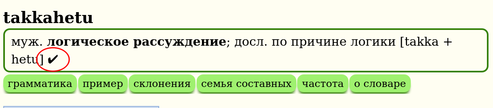

Особенности
DPD содержит четыре различных словаря
Словарь палийского языка на русский (зеленый)

Словарь корней палийского языка (оранжевый)

Для получения дополнительной информации нажмите здесь
Словарь русского на палийский язык (фиолетовый)

Словарь сокращений и помощи (зеленый)

Два дополнительных словаря
Существует два дополнительных словарных набора, которые работают в связке с DPD. Первый посвящен разбору составных слов и разложению сложных слов, а второй - грамматический словарь, который может объяснить падеж каждого измененного слова в тексте. Щелкните по ссылкам, чтобы узнать больше.
DPD распознает 1,5 миллиона уникальных измененных форм слов палийского языка
Когда вы выбираете слово в тексте на палийском языке и нажимаете сочетание клавиш, DPD автоматически определяет все главные слова, к которым принадлежит эта измененная форма. Например, клик по takkarassa автоматически откроет takkara.

100% Распознавание словаря в этих книгах
DPD распознает все слова, как в Chaṭṭha Saṅgāyana Tipiṭaka, так и в Mahāsaṅgīti издании на Sutta Central, включая все сложные слова и соединения, в следующих книгах:
Виная: Pārājikapāḷi , Pācittiyapāḷi Сутты: Все четыре Никаи Кхуддака Никая: Khuddakapāṭha, Dhammapada, Udāna, Itivuttaka, Suttanipāta, Theragāthā Вплоть до: Therigāthā
Кликайте по всему
Одна из значительных особенностей GoldenDict - это возможность щелкнуть по любому слову, чтобы открыть определение этого слова. Это создает бесконечное пространство для изучения языка.
Компактное представление
Вся важная информация на палийском языке представлена в одной компактной строке, доступной на первый взгляд, а более подробная информация доступна при нажатии кнопок.

Основная информация включает часть речи, падеж, значение, буквальное значение и упрощенную конструкцию.
Система нумерации
Если слова с несколькими значениями происходят из разных источников, их нумерация будет отражать это.

В приведенном выше примере 1.1 и 1.2 оба связаны с санскритским śara, в то время как 2.1 происходит от корня √sar (издавать звук), санскритское svara.
Степень завершенности данных о словах
Поскольку DPD находится в процессе выполнения, полезно знать, насколько полны данные о слове. Это указывается символами (✓◑✗) после записи.

✔ галочка означает, что данные о слове в основном завершены с контекстуальным значением, грамматической информацией, примерами из сутт и другой соответствующей информацией.

◑ половина круга означает, что данные о слове частично завершены с контекстуальным значением и грамматической конструкцией, но минимальной другой информацией.

✗ крестик означает, что данные о слове все еще находятся в процессе создания и содержат только таблицу измененных форм, таблицу частотности и очень базовую информацию.
В русском словаре дополнительно эти символы могут быти либо серого цвета (✓◑✗) если перевод еще не был проверен, либо основого цвета (✓◑✗) если перевод уже проверен и утвержден.
Перевод нейронными сетями
Важно отметить, что часть информации в словаре была частично переведена с использованием технологий искусственного интеллекта, нейронными сетями GPT 4o. Этот процесс позволяет нам расширять словарь и обновлять его с более высокой скоростью. Однако, такие переводы требуют дополнительной проверки для обеспечения точности и достоверности информации. Поэтому, записи, полученные с помощью искусственного интеллекта, помечены как [пер. ИИ]. Если вы обнаружите явно некорректный перевод ИИ, пожалуйста, сообщите нам через Google форму.

Грамматика
Щелкните кнопку грамматика, чтобы получить более подробную грамматическую информацию о слове.

Это включает информацию о корне, детальное образование, производное, фонетические изменения, составное слово, антонимы, синонимы, комментарий, неиндоарийские родственные слова, санскритские родственные слова и санскритский корень.

Если вы заметили ошибку, пожалуйста, нажмите ссылку, чтобы исправить ее.
Примеры
Щелкните кнопку примеры, чтобы увидеть соответствующие примеры из сутт, содержащие слово.

Если у вас есть лучший пример, пожалуйста, сообщите нам!
Склонение / Спряжение
Щелкните кнопку склонение или спряжение, чтобы увидеть все измененные формы слова.

Эта таблица автоматически генерируется с использованием системы основа + шаблон, например, anicc + o. Неправильные склонения имеют свои собственные уникальные таблицы.
Измененные формы, не найденные в тексте Chaṭṭha Saṅgāyana, отмечены серым.
Семья корня
Щелкните кнопку семья корня, чтобы увидеть все слова, которые имеют тот же префикс + корень.

Эта информация уникальна для DPD и основана на детальном изучении системы корней палийского и санскритского языков. Это отлично подходит для изучения тонких оттенков значений, которые может показывать комбинация корня + префикса.
Семья слова
Щелкните кнопку семья слова, чтобы увидеть все связанные слова, которые не происходят от корня, а созданы из первичного слова с использованием префиксов и суффиксов.

Семья составного
Щелкните кнопку семья составного, чтобы увидеть коллекцию всех составных слов, которые содержат определенное слово.

Если само заглавное слово является составным, будут перечислены все семьи слов компонентов.

Частотность слова
Щелкните кнопку частота, чтобы увидеть карту интенсивности того, где и как часто слово встречается в тексте Chaṭṭha Saṅgāyana.

Нажмите здесь для получения более подробной информации об этой интересной функции.
Английско-палийский словарь
Щелкнув любое русское слово в GoldenDict, теперь можно получить доступ к русско-палийскому словарю, который выводит список точных совпадений.

Или вы можете использовать поиск по слову, чтобы найти слово, фразу или идиому. В раскрывающемся списке будут отображаться все возможные варианты в процессе ввода слова для поиска.

Или вы можете выделить любое слово, фразу или идиому и использовать горячую клавишу.

Эта функция предназначена для начинающих, которые испытывают трудности с переводом с русского на палийский, и более продвинутых студентов, изучающих общение на палийском языке.
Обратная связь
Один из самых важных аспектов DPD - это обратная связь. Когда вы замечаете ошибку, пожалуйста, нажмите ссылку, чтобы исправить ее. Это открывает форму Google, которая автоматически заполняется заголовком.

Это обычно занимает менее минуты, чтобы зарегистрировать ошибку, и помогает улучшить качество словаря для всех. Если у вас есть другие вопросы или комментарии, пожалуйста, сообщите нам!
Ссылки на Википедию
Все цветы, деревья, растения и необычные животные содержат ссылку на статью Википедии для получения более подробной информации по теме. Индийские растения часто используются в ранних буддийских сравнениях, и одна картинка стоит тысячи слов.

Можно быстро переключить язык статьи нажав на language и выбрав Русский.
Шрифты
Если вы предпочитаете шрифт без засечек, установите Noto Sans, он хорошо работает с диакритическими знаками Пали. Если вы предпочитаете шрифт с засечками, установите Deja Vu Serif или Verajja Serif, специально созданный шрифт для текстов на Пали.
Достаточно теории, далее читайте как установить и настроить GoldenDict на вашем компьютере (Windows / Mac / Linux / Android), или обновить его раз в месяц, если он уже установлен.